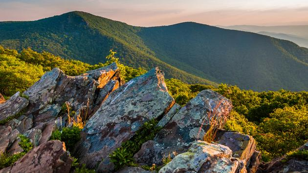
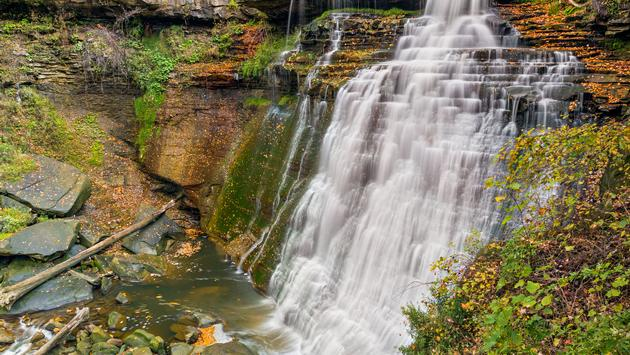
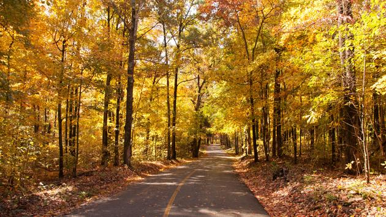

Sunday, April 11 is National Pet Day and while 24 hours isn't nearly enough time to celebrate all the things we love about our four-legged friends, many of America's national parks make it easy for you to reward your pets year-round. Here are some of the best parks across the country for traveling pet owners in 2021.
Pet owners exploring New England this spring and summer won't want to miss Maine's Acadia National Park, which offers plenty of room for your dog to roam, 100 miles of hiking trails and 45 miles of carriage roads to be exact. Blackwoods, Seawall and Schoodic Woods campgrounds also permit pets so an overnight stay is possible.
Rocky Mountain National Park allows pets on all established roads and parking areas, including the scenic Endovalley Road. Established campgrounds and picnic areas are also welcoming of leashed dogs. While pets aren't allowed on trails within the park, travelers can hike with their furry friends on nearby trails in Arapaho and Roosevelt National Forest as well as multi-use trails located around the Rocky Mountain town of Estes Park.
Shenandoah National Park in Virginia is as pet-friendly as national parks come, opening up a whopping 480 of the park's 500-plus miles of trails to leashed dogs. Pets are also allowed in campgrounds and Fido can even ride shotgun with you while you cruise Shenandoah's picturesque Skyline Drive.
Ohio's underrated Cuyahoga Valley National Park located about a half-hour south of Cleveland boasts more than 110 miles of hiking trails where pets are permitted. Visitors and their furry friends are also welcome on 20 miles of the park's famous Towpath Trail. However, pets should be kept off the Cuyahoga Valley Scenic Railroad Train and the East Rim mountain bike trails.
A bucket-list national park for many traveling pet owners, the Grand Canyon is open to leashed pets but only in select areas, including the trails above the South Rim, Mather Campground, Desert View Campground, Trailer Village and throughout other developed areas. Along the North Rim, pets are only allowed on the bridle trail (greenway) that connects the North Kaibab Trail and the portion of the Arizona Trail stretching north to the park entrance station. Finally, pets are only allowed on established roads and in the campground at Tuweep.
Leashed pets are allowed in certain areas of Oregon's Crater Lake National Park, including the one-quarter-mile paved promenade at Rim Village and the campground loops at Mazama Village during the summer and fall months. Pets are also allowed on the following trails during the summer and fall barring significant snow: Godfrey Glen Trail; Lady of the Woods Trail; Grayback Drive and the Pacific Crest Trail (not the "alternate" PCT that follows along the rim of the lake).
Nestled in California's Sierra Nevada mountains, Yosemite National Park is one of the nation's most coveted, offering mesmerizing waterfalls and awe-inspiring giant sequoias as well towering cliffs and sprawling meadows. Dogs are permitted to enter the park but only in select areas, including developed areas, fully paved roads, sidewalks, and bicycle paths (except where otherwise specified) and all campgrounds with the exception of walk-in campgrounds and group campsites.
Although pets are not allowed inside of the world's longest known cave system, Kentucky's Mammoth Cave National Park is quite pet-friendly otherwise, allowing all leashed pets on all of the many miles of surface trails within the park. Visitors to the park can also board their pets or book a pet-friendly room at The Woodland Cottages located within Mammoth Cave National Park.
Visitors to South Carolina's Congaree National Park—which is home to the largest intact expanse of old-growth bottomland hardwood forest remaining in the southeastern U.S.—will be pleased to know that their leashed pets are allowed on all trails, including the boardwalk and campgrounds. The comfortable 2.6-mile Boardwalk Loop Trail is among the park's easiest trails and is a great place to start.